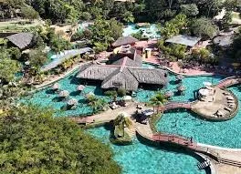
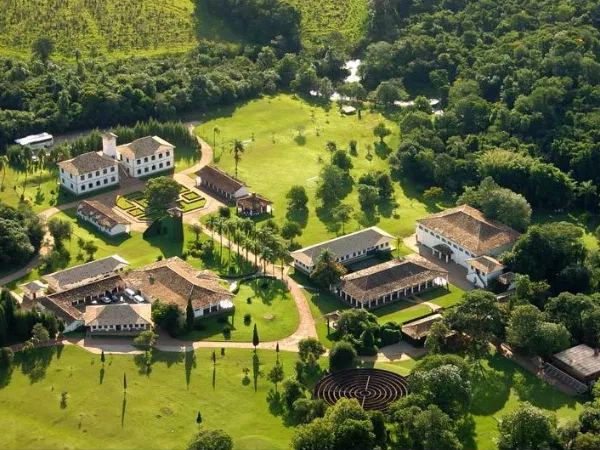
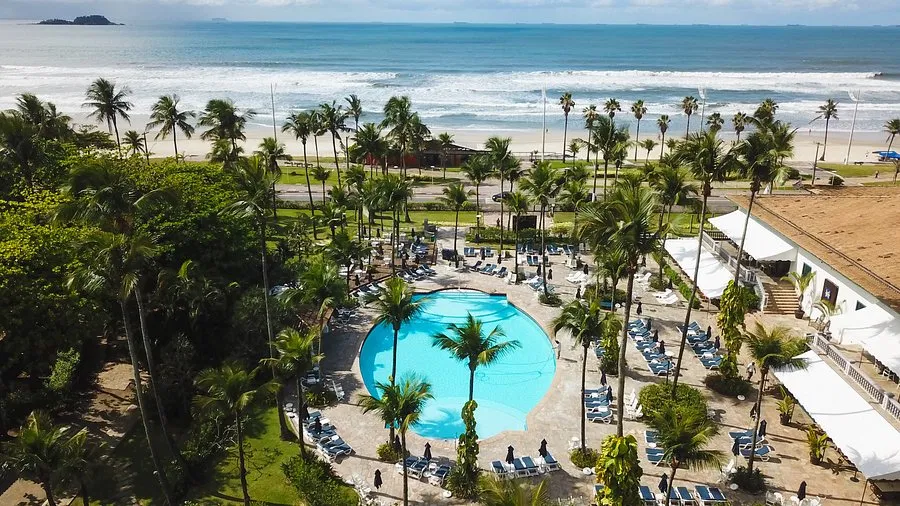
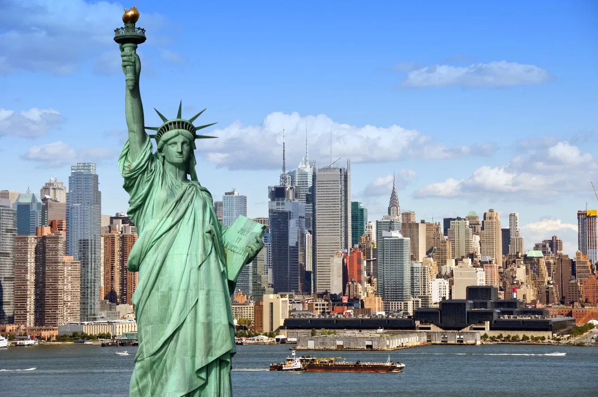
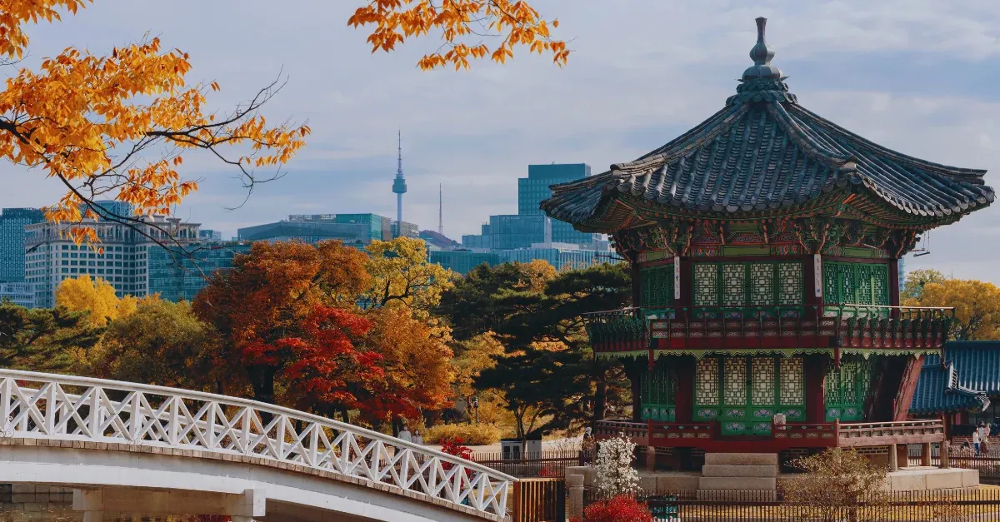

Rio Quente - Goiás 📍Esse lugar me remete muito a minha infância, pois sempre viajei para lá em família quando era mais novinha, é um lugar muito reconfortante, principalmente as pousados. Mas o melhor mesmo do lugar são os parques aquáticos da região, o que eu mais costumava ir é o Hot Park, um dos melhores parques que eu já fui!

Sítio do Carroção 📍Fui para lá em 2025 na minha viagem de formatura, super recomendo para uma viagem com os amigos porque o lugar possui várias atividades alternativas e diferentes do habitual, como kart, labirinto, caverna, aquário de jacaré, empinar pipa etc.

Praia Guarujá 📍Uma das mehores praias que eu já fui, fiquei no hotel Casa Grande, um resort 5 estrelas muito aconchegante e uma ótima gastronomia. Ele fica bem em frente à praia, o que facilita muito no dia a dia. Foi muito divertido, com certeza voltaria!

EUA 📍Meu SONHO é poder fazer intercâmbio nos Estados Unidos. Porém minha maior motivação para ser nesse país são os seus fast-foods, principalmente o Canes, que vende frango frito com um tipo de molho que deve ser MUITO bom.

Coreia do Sul 📍Tenho muita vontade de conhecer mais a cultura desse país, porque eu acho muito interessante, além da gastronomia que parece ser muito boa também!
Paris 📍 Voltar para a página incialParis me atrai, mais por questão visual mesmo, afinal, quem não tem vontade de conhecer de perto a Torre Eiffel? Andar pelas ruas de Paris, a cidade do amor, visitar o Museu do Louvre. É realmente um lugar muito turistável.